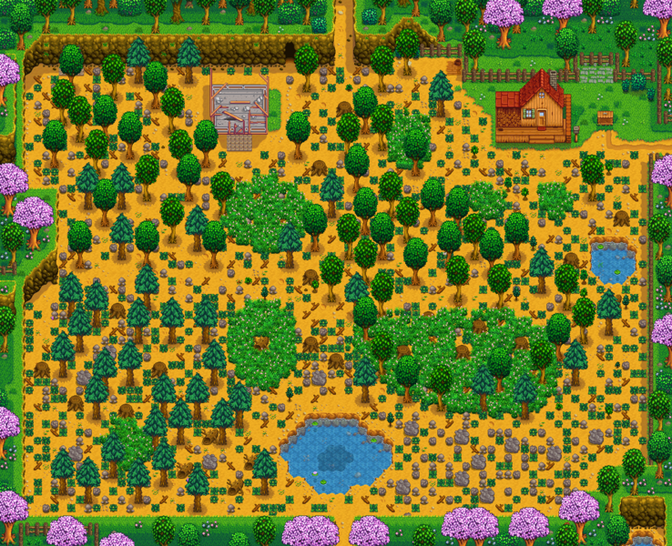
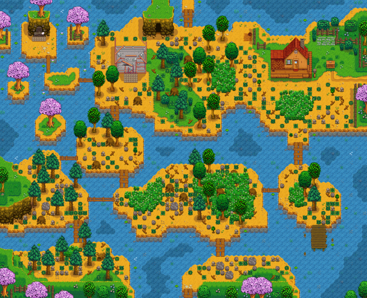
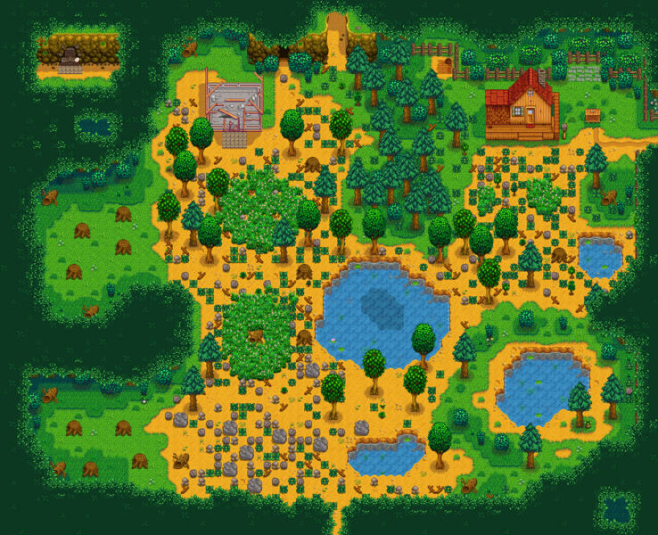
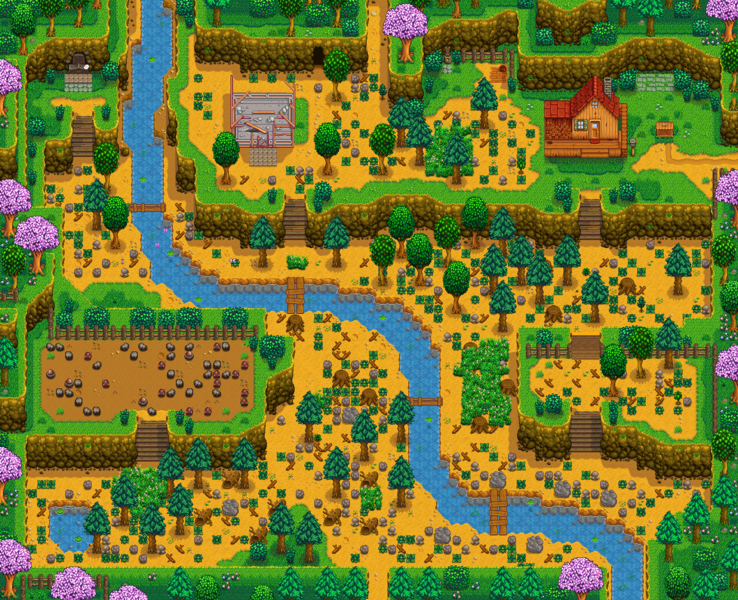
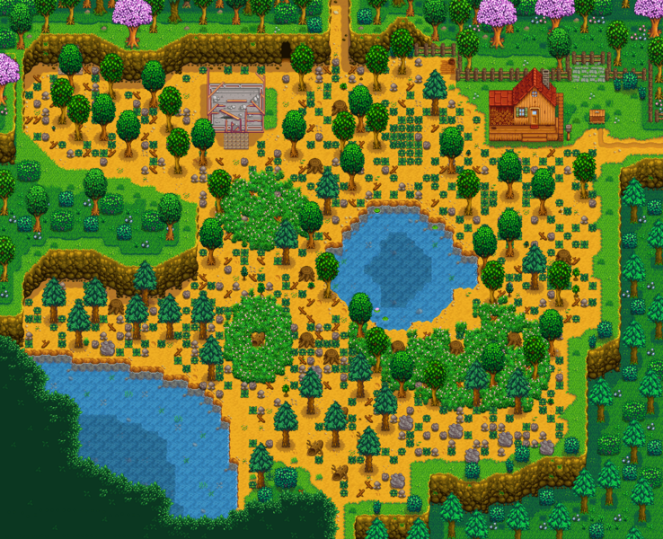
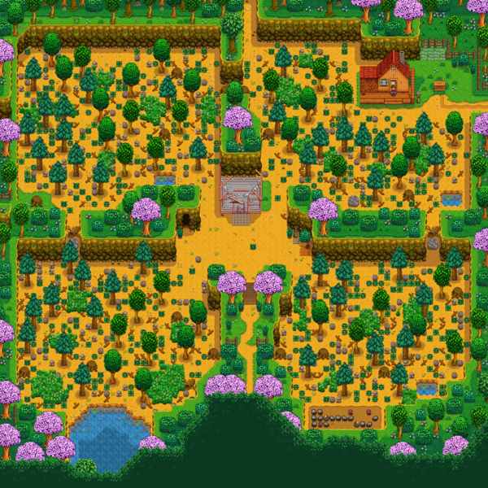
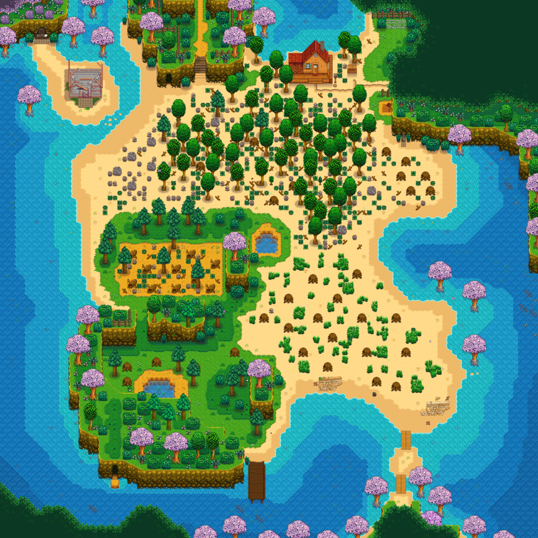
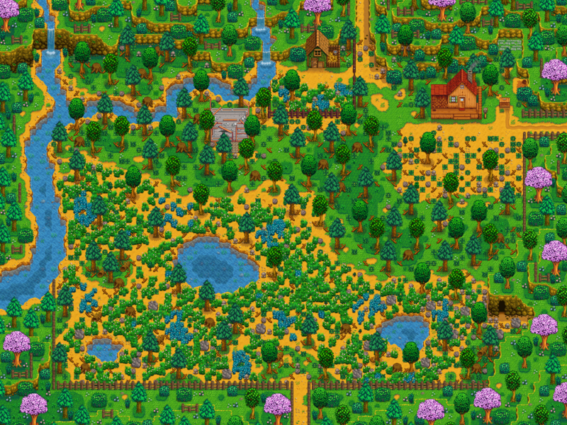

Farms
| Standard Farm | |
|---|---|
 |
Ideal for crops and animals |
| Riverland Farm | |
|---|---|
 |
Ideal for fishing |
| Forest Farm | |
|---|---|
 |
Ideal for foraging |
| Hill-top Farm | |
|---|---|
 |
Ideal for mining |
| Wilderness Farm | |
|---|---|
 |
Ideal for combat |
| Four Corners Farm | |
|---|---|
 |
Ideal for multiplayer |
| Beach Farm | |
|---|---|
 |
Ideal for fishing and foraging |
| Meadowlands Farm | |
|---|---|
 |
Ideal for animals |